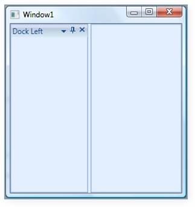
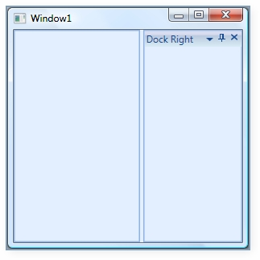
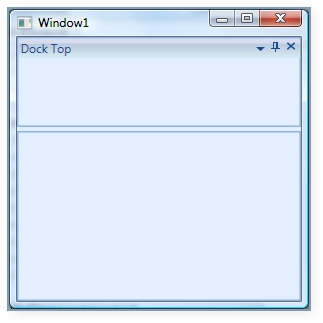
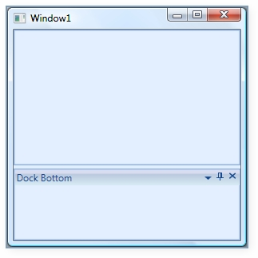
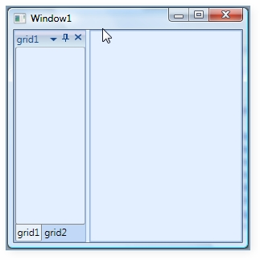

SideInDockMode and SideInFloatMode are used to decide the dock side of child with respect to their target names in dock mode and float mode.
|
[XAML] <syncfusion:DockingManager>
<Grid Name="grid1" syncfusion:DockingManager.SideInDockedMode="Left" syncfusion:DockingManager.Header="Dock Left"/>
</syncfusion:DockingManager> |
|
[C#] DockingManager.SetHeader(grid1, "Dock Left"); DockingManager.SetSideInDockedMode(grid1, DockSide.Left); |

Figure 314: DockSide Left
The following code represents child in a Dock right position.
|
[XAML] <syncfusion:DockingManager> <Grid Name="grid1" syncfusion:DockingManager.SideInDockedMode="Right" syncfusion:DockingManager.Header="Dock Right"/> </syncfusion:DockingManager> |
|
[C#] DockingManager.SetHeader(grid1, "Dock Right"); DockingManager.SetSideInDockedMode(grid1, DockSide.Right); |

Figure 315: DockSide Right
|
[XAML] <syncfusion:DockingManager> <Grid Name="grid1" syncfusion:DockingManager.SideInDockedMode="Top"/> </syncfusion:DockingManager> |
|
[C#] DockingManager.SetHeader(grid1, "Dock Top"); DockingManager.SetSideInDockedMode(grid1, DockSide.Top); |

Figure 316: DockSide Top
The code below shows child position in a Dock bottom.
|
[XAML] <syncfusion:DockingManager>
<Grid Name="grid1" syncfusion:DockingManager.SideInDockedMode="Bottom" syncfusion:DockingManager.Header="Dock Bottom"/>
</syncfusion:DockingManager> |
|
[C#] DockingManager.SetHeader(grid1, "Dock Bottom"); DockingManager.SetSideInDockedMode(grid1, DockSide.Bottom); |

Figure 317: Dock Bottom
|
[XAML] <syncfusion:DockingManager> <Grid Name="grid1" syncfusion:DockingManager.Header="grid1"/> <Grid Name="grid2" syncfusion:DockingManager.TargetNameInDockedMode="grid1" syncfusion:DockingManager.Header="grid2" syncfusion:DockingManager.SideInDockedMode="Tabbed" /> </syncfusion:DockingManager> |
|
[C#] DockingManager.SetTargetNameInDockedMode(grid2, "grid1"); DockingManager.SetSideInDockedMode(grid2, DockSide.Tabbed); |

Figure 318: DockSide Tabbed
Refer Also:
How to Create Docking Manager?